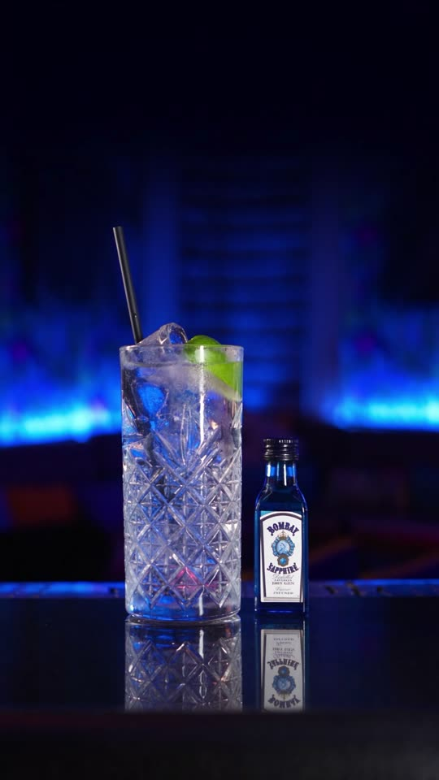
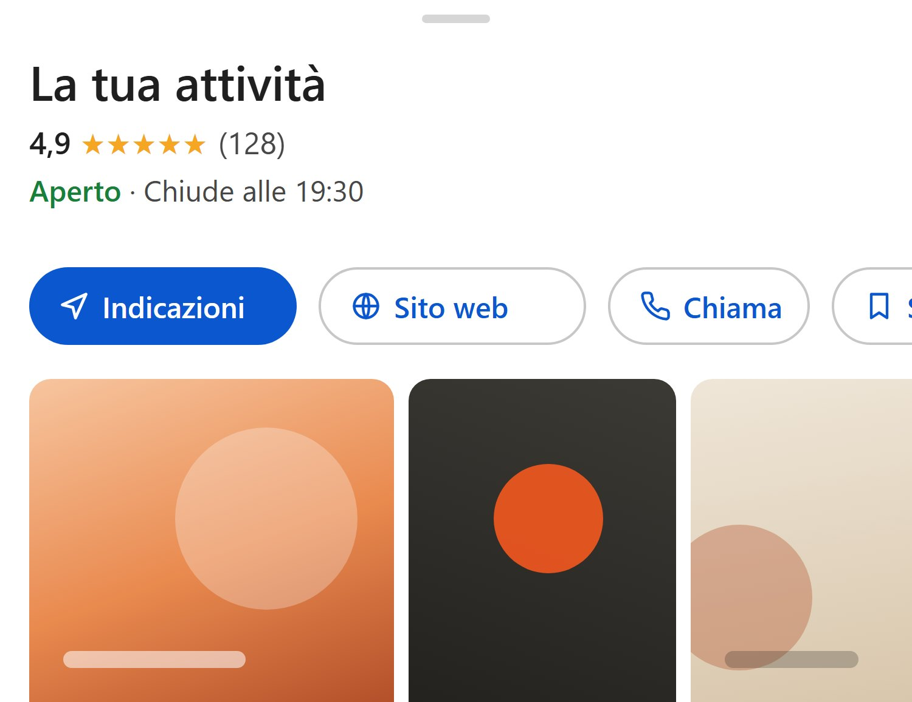
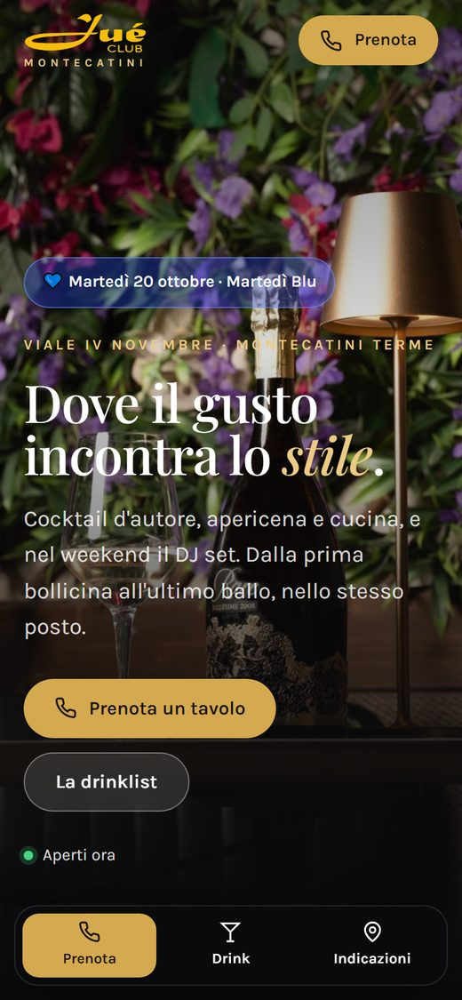
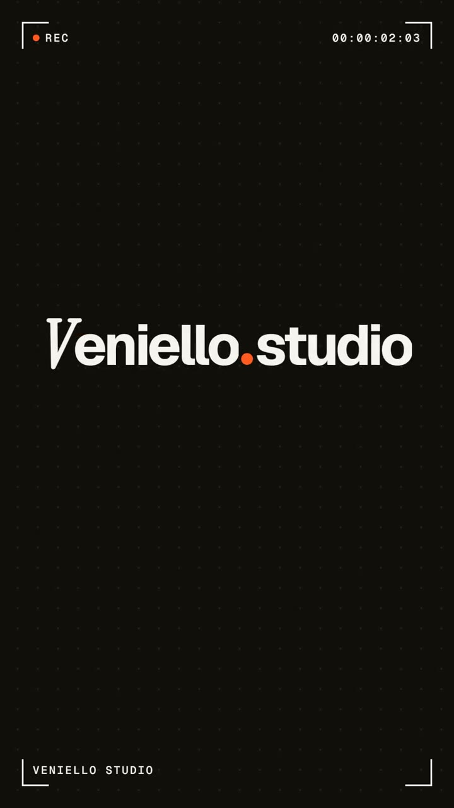
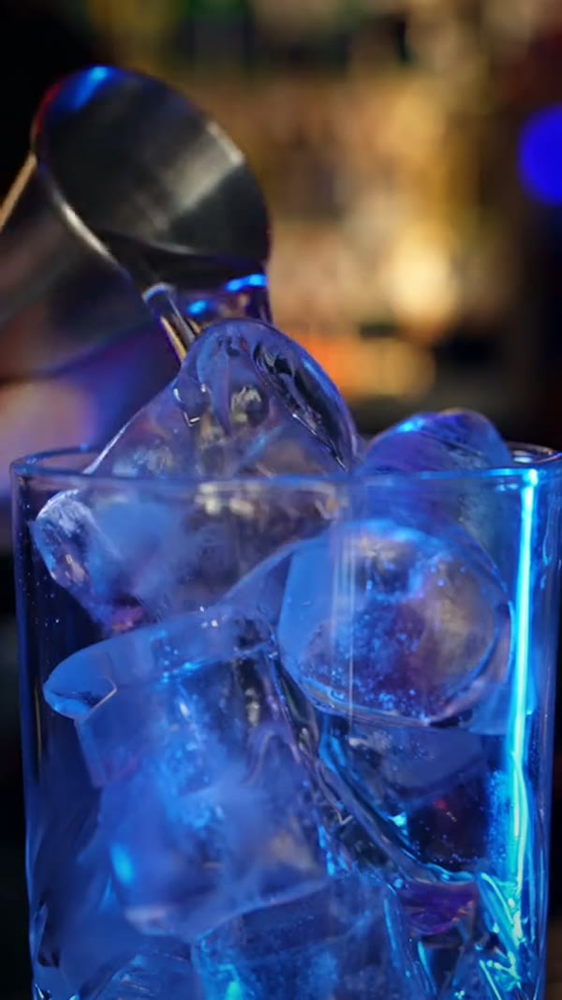
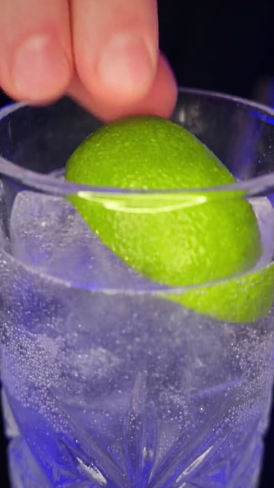
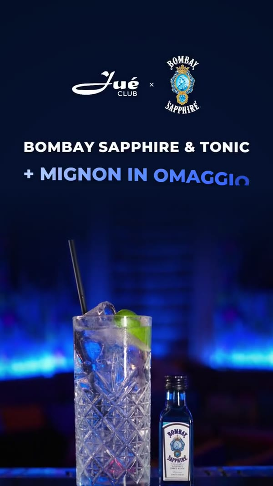
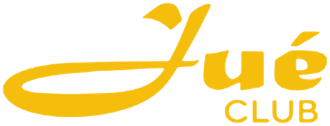

Ci scrivi
Su WhatsApp o per telefono. Ci racconti la tua attività in due minuti.
Social · Google · Video · Siti
Instagram, TikTok, scheda Google e video, ogni mese, con il sito compreso. Per ogni attività della Valdinievole: negozi, ristoranti, saloni, studi, artigiani e strutture. Vedi il tuo sito prima di pagare un euro.
Prezzi scritti prima · Paghi solo se ti piace · Risposta su WhatsApp
Il nostro lavoro.
Sito, Google, social e video.
Da un solo studio
I clienti decidono dal telefono, in pochi secondi. Cercano su Google, aprono il sito, guardano Instagram.
Noi sistemiamo tutti e tre, così la scelta cade su di te.
Su Google e su Maps, con foto belle, orari giusti e il tasto Chiama.
Dal sito: servizi, prezzi, foto vere e un tasto per contattarti.
Su Instagram e TikTok, con reel e grafiche che tengono vivo il ricordo.
Sette servizi. Li prendi tutti insieme in un abbonamento al mese, con il sito compreso, oppure uno alla volta.
Post, storie e grafiche ogni mese, pubblicati da noi.
da 59 €al mese
Base, Plus o Pro, con il sito compreso.


Profilo in ordine, storie in evidenza, link giusti.
59 €una volta sola
Con la scheda Google. Incluso in ogni abbonamento.

Riprese vere, montate per Reel, TikTok e storie.
da 99 €al mese
4 reel al mese nel Plus, 8 nel Pro.

Chi cerca in zona trova orari, foto e recensioni.
59 €una volta sola
Con Instagram. Incluso in ogni abbonamento.


Chi sei, cosa fai e un tasto per chiamarti.
119 €una volta sola
Con Google e Instagram. Incluso in ogni abbonamento.

Logo animato e scritte a tempo di musica.
Su preventivo
Il prezzo te lo scriviamo prima.



Idea, copione e montaggio, come i grandi marchi.
da 300 €a spot
Uno all’anno incluso nel Pro.
99 €al mese · Plus
Vedi i prezziSiti, video e grafiche: lavori veri fatti per il Jué Club di Montecatini Terme. La scheda Google è un esempio.
Su WhatsApp o per telefono. Ci racconti la tua attività in due minuti.
Con foto e informazioni vere della tua attività. Ti arriva un link da aprire sul telefono.
Sul tuo dominio, insieme a Google e ai social. Da lì in poi ti trovano.
Le attività della Valdinievole con cui lavoriamo ogni mese.


Cocktail bar · Bistrot · DJ set · Montecatini Terme
Ti prepariamo l’anteprima gratis: se ti piace, entri anche tu.
Scrivici →59 € al mese
8 pubblicazioni al mese
Per esserci con costanza.
99 € al mese
12 pubblicazioni al mese
Per farti scegliere ogni settimana.
199 € al mese
20 pubblicazioni al mese
Per chi fa anche pubblicità.
Si disdice quando vuoi, e il sito resta tuo. Prezzi finali, senza sorprese. Il dominio è l’unica spesa a parte: circa 10-15 € l’anno, intestato a te. Nel Pro i soldi della pubblicità li paghi tu direttamente a Meta, quanto vuoi tu.
119 €
una volta sola
59 €
una volta sola
da 300 €
a spot
Il prezzo finale dipende da durata e riprese: te lo diciamo prima, per scritto.
Sì. La prepariamo, la guardi con calma sul telefono e decidi. Se non ti convince, non paghi niente e non ti impegni.
Solo il dominio, cioè il nome del sito (per esempio latuaattivita.it). È intestato a te e costa circa 10-15 € l’anno.
Sì. Il sito è tuo e resta online anche se smetti: paghi solo il dominio, circa 10-15 € l’anno. Da lì in poi le modifiche si pagano a parte.
No. Sito, Google e Instagram si possono pagare una volta sola, 119 €. Se vuoi anche la gestione social, il sito è compreso nell’abbonamento: da 59 € al mese, e disdici quando vuoi.
Usiamo solo foto vere della tua attività: quelle che hai già sui social, quelle che ci mandi o quelle che scattiamo noi quando passiamo.
Siamo a Montecatini Terme e lavoriamo con le attività di tutta la Valdinievole. Se vuoi, ci vediamo di persona.
Scrivici su WhatsApp il nome della tua attività: ti prepariamo l’anteprima gratis, senza impegno.